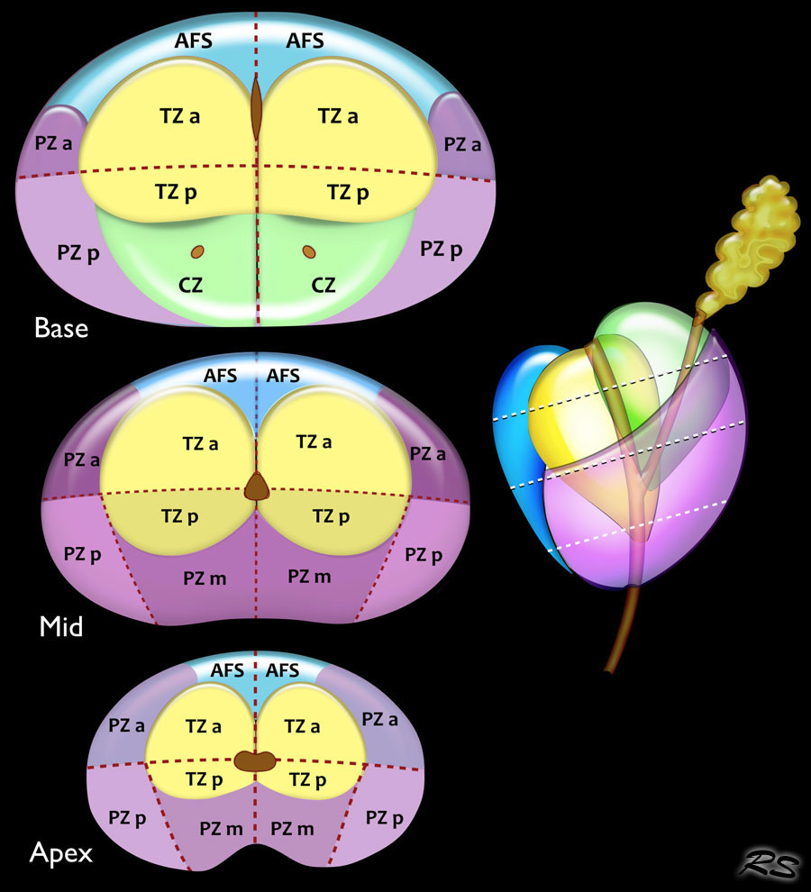

- Base has 6 sectors on each side:
- AS: anterior fibromuscular stroma
- TZ: anterior and posterior transition zone
- PZ: anterior and posterior zone
- CZ: central zone around the ejaculatory ducts
- Midportion also has 6 sectors on each side:
- AS: anterior fibromuscular stroma
- TZ: anterior and posterior transition zone
- PZ: anterior, posteromedial and posterolateral peripheral zone
- Apex also has 6 sectors on each side:
- AS: anterior fibromuscular stroma
- TZ: anterior and posterior transition zone
- PZ: anterior, posteromedial and posterolateral peripheral zone
- Seminal vesicles are divided into left and right
- Urethral sphincter is marked in the prostate apex and along the membranous segment of the urethra.